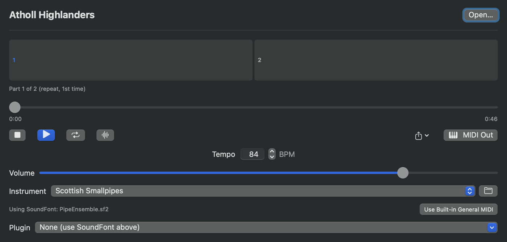

Real ornaments
Doublings, throws, grips, taorluath, birls, strikes and crunluath, played from a table of what pipers actually play. Strathspeys come out pointed.
Press play on any .bww, .bmw, ABC or MusicXML file and hear it the way it's meant to go — doublings, throws, birls and all.
Download for Mac Free · Apple Silicon · macOS 13+ · Open sourceAtholl Highlanders, played by PipePlayer

Exported from the app with its built-in bagpipe sound, from ordinary tune files. Trimmed and level-matched for the web.
Tune collections pile up as files that stay silent until you sit down with a chanter. Not anymore.
.bwwBagpipe Music Writer, Bagpipe Reader.bmwBagpipe Musicworks Gold.abcABC notation.musicxml .xml .mxlEnsemble, MuseScore, or anything that exports MusicXMLDoublings, throws, grips, taorluath, birls, strikes and crunluath, played from a table of what pipers actually play. Strathspeys come out pointed.
Loop the whole tune or just the part you're drilling, with no gap at the seam. Change tempo without stopping.
Line up an MSR or three reels. Each tune plays once, at its own tempo, and the next comes in on the beat.
Drop the seconds on top of the tune and hear both. They follow the melody's tempo and repeats, with a mute for each.
Save what you're hearing as WAV, AAC or MP4 to send to the band or play along with on your phone.
Apple's built-in bagpipe, any SoundFont you have, any instrument plugin on your Mac, or MIDI out to a DAW or hardware synth. Drones optional.
Grab the latest zip from the Releases page.
Unzip and move PipePlayer.app into your Applications folder.
It's not from the App Store, so macOS warns about an unidentified developer. Control-click the app and choose Open. On macOS 15 or later, try opening it once, then go to System Settings → Privacy & Security and click Open Anyway. Only needed once.
No account, no analytics, no network access. Your files stay on your Mac.